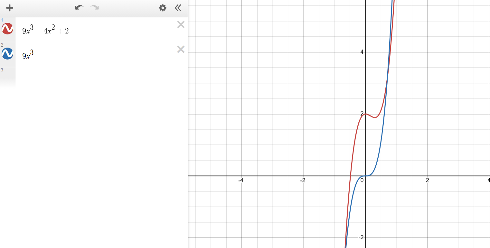
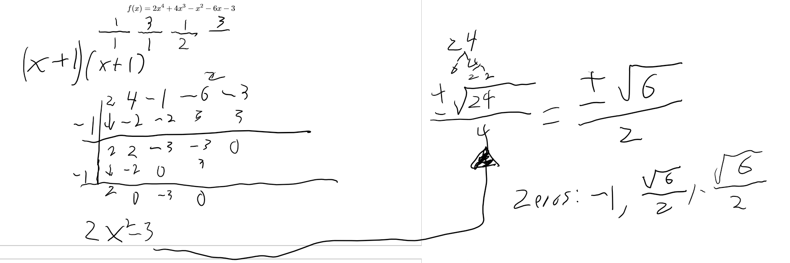

Polynomials and Power Functions (Chapter 11)¶
Power Functions¶
Power Function form
k and p are constants.
Example of Power Function
p: \(\frac{1}{3}\) k: \(2\)
Example of Not a Power Function
Not a power function due to multiple x values when expanded
Direct and Inverse Proportional
Graphs of Power Functions
The graph is based off of the k an p. The following is based off p is a non negative integer.
Limit Notations¶
A limit is is what a function approaches as x approaches a.
For example:
This states that x increases without bonds as f(x) approaches 9. This is a horizontal asymptote.
Approaching a number
To express approaching from left use a minus sign:
To express approaching from right, use a plus sign:
Polynomials¶
Note
Polynomials are usually written from highest power to lowest power.
Example of Polynomial
Example of non Polynomial
\(\sqrt[5]{x}\) is the same as \(x^{\frac{1}{5}}\) and since polynomials must have a positive integer exponent, this is not a polynomial.
Long Run of a Single Polynomial
The long run of polynomial always represents its leading coefficient.
Example:
While it may act differently in the short run, the graph will act like \(9x^3\) in the long run.
Since \(9x^3\) has a domain of \([-infty, \infty]\), the \(9x^3 -4x^2 + 2\) will have the same long run domain.
Multiplicity effect of Zeros¶
The factored form, the multiplicity is the degree that a zero is raised by. For example in \((x - 2)^4\), the multiplicity will be 4.
Finding Zeros for degree > 2 (RZT)¶
RZT states that if a polynomial has integer coefficients, the every rational zero has the form \(\mp \frac{Factor of Constant}{Factor of Leading Term}\)
Note
A function of n power will have at most n-1 zeros!
Tip
To forget to try grouping!!!
Factor completely
Apply RZT to find all possible zeros
Use a graphing calculator to find most likely zeros
Use long division and divide the equation by the zero form. \((x - k)\) where k is the zero.
If the zero bounces, known that the multiplicity is two and you must divide twice.
If the zero passes, known that the multiplicity is one and you must divide once.
Repeat until the equation is factorable or able to solve via quadratic formula.
Example
Complex Zeros¶
To express the zeros in a formula know that \(a + bi\) will become \(x-(a+bi)\) #. Multiply the two complex zeros
\[\begin{split}(x - (a + bi))(x - (a - bi)) \\ ((x - a) + bi)((x - a) - bi) \\ (x-a)^2 - (bi)^2 \\ x^2 -2ax + a^2 + b^2 \\\end{split}\]
Long divide the equation by zero, result will be remaining zero
Rational Functions¶
Rational Function Form:
Both p and q are polynomials.
Examples of Rational Function
Since both the top and bottom are valid polynomials, this is a rational function.
Examples of non Rational Function
Since the top is not a valid polynomial, it is not a rational function.
Long Run¶
A rational function will behave like its leading term. Long run can be determined by \(\frac{leading term of numerator}{leading term of denominator}\).
Rules of HA
Slant Asymptote
To calculate slant asymptote, divide the numerator by the denominator.
Short Run¶
Example:
In this rational function we can see a bouncing zero at (3, 0) and an asymptote at x = 2.
Find behavior near vertical asymptotes
Example:
Limits: